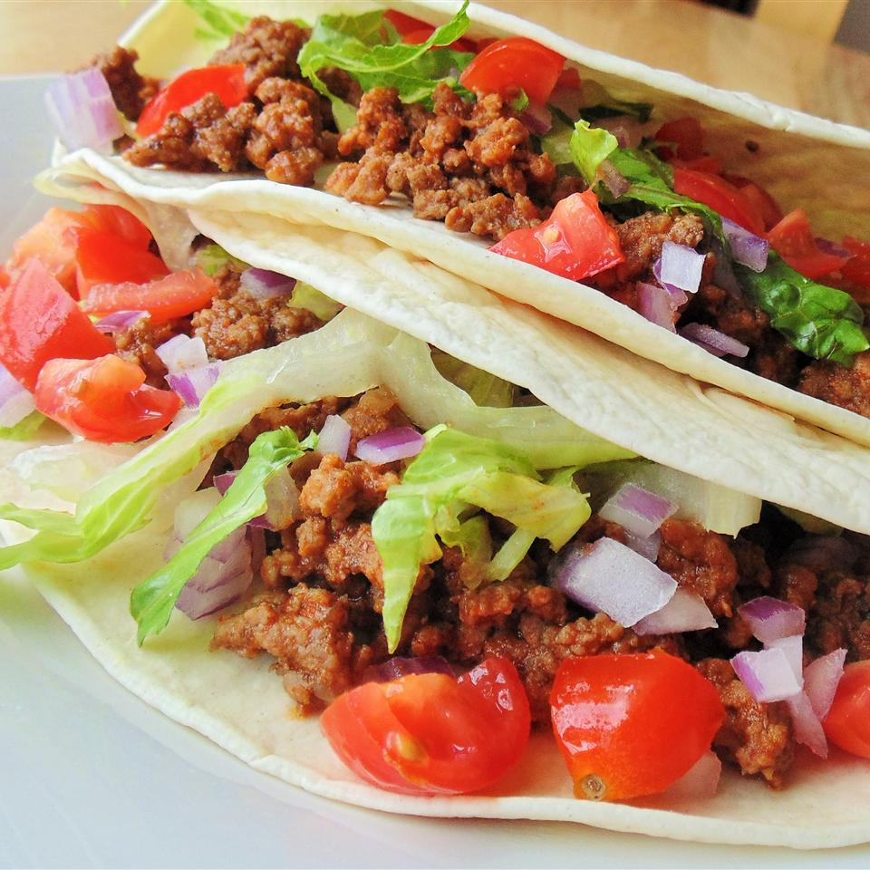

Karen's Soft-Shelled Texas Tacos

Description
This recipe is a true crowd pleaser! Adults and children alike
will enjoy the delicious tangy Tex-Mex rendering of an old classic.
Ingredients
Sauce:
- 20oz tomato juice
- 1 cup ketchup
- 1/4 cup brown sugar
- 2 tbsp vinegar
- 2 tbsp worcestershire sauce
- 2 lbs chicken
Shells
- 3 eggs
- 1 1/2 cup milk
- 1 cup flour
- 1 tsp salt
- 1/2 cup cornmeal
- 2 tbsp melted butter
Steps:
Beef
- In a skillet, brown beef.
- In a medium bowl, mix all ingredients except brown sugar, then add to browned beef.
- Stir, then add sugar once combined.
- Simmer.
Shells
- Mix eggs, milk, butter, and salt.
- Add cornmeal and mix.
- Add flour and mix.
- Fry 1/4 cup batter per shell in a well-greased skillet.